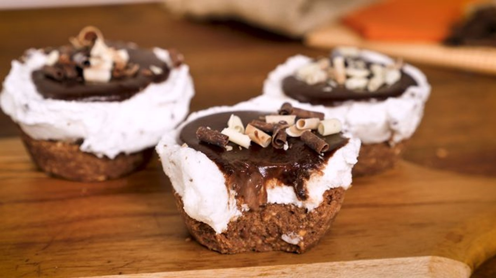

CUPCAKE GELADO DE NUTELLA

Ingredientes
- 1 copo de 350g de Nutella;
- 1 pacote de biscoito maisena;
- 1 pote de sorvete ao gosto pessoal (no caso desta receita: flocos);
- 170g de chocolate meio amargo;
- 170mL de creme de leite.
Passos do modo de preparo
- No liquidificador triture bem os biscoitos, coloque em uma tigela e misture com a Nutella até virar uma massa.
- Forre o fundo das forminhas de muffins e cubra com sorvete.
- Leve para gelar. Derreta o chocolate e misture o creme de leite fazendo uma ganache. Desenforme os cupcakes, cubra o ganache e sirva.
Esta receita foi retirada do site Tudo Gostoso.